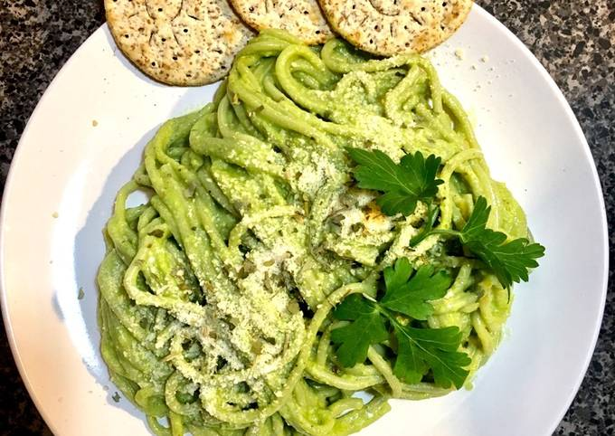
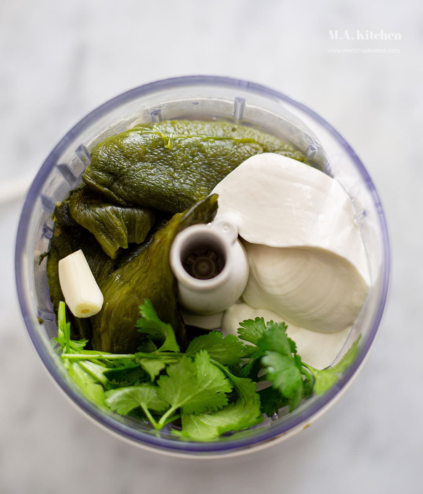

Green Spaghetti Recipe

This Green Spaghetti will blow your mind!
This time I come with a very delicious meal that is one of my favorites,
I will glad to share this knowledge with you and i hope it is very delicious;
it is very necessary to say that this is a good healthy option too because it
only have nature ingredients and green ones!
Now lets start with the ingredients you will need:
- Four Puebla peppers
- 2L of water
- Two Spaghetti packages
- One cup of chicken soup
- Four to eight spinach
- Two chard
- One package of cream cheese
- 500ml of cream
- A half of Butter
Now that you have all (at least almost all) the ingredients, lets start with the preparation:
- First put to boil the water in the stove.
- Now put some vegetable oil in the water (just a little) and after 2 minutes add
the spaghetti pasta and lower the fire to the minimum.
- After 10-15 minutes (check the pasta is soft) put the pasta in another container and let it cold
- Lets start with the peppers, put them directly to the fire (like middle fire level)
until the skin is black and then remove them
- Put the peppers in a plastic bag with water and close it for 10 minutes.
- Remove the black skin of the pepper with a knife and cut them to half to
remove the seeds and the veins
- Put the peppers, cream, cheese, chicken soup, spinach to blender and fill
the blender with a quarter or little less of water.
- It's time to melt the butter in a frying pan and add the pasta and the
sausage we made before.
- After 10 minutes it will be done and you can enjoy this delicious meal.

Just a little observation, if you think it is too much cream then just use the cream cheese.
I'ts better if the sausage is middle thick and liquid because when you boil it, the volume
will be reduced.